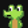

GMGN Watchlist
Ctrl+Shift+G · изменить
—
Выбранные кошельки со страницы токена
Нумеровать
Цвет метки в GMGN:
#E9AE4D
#
Адрес
Имя
✓
Отметьте чекбоксом кошелёк в таблице на странице токена (Holders/Traders/Activity) или выделите несколько строк мышью.
Добавить адреса в вачлист
Очистить
Экспорт в трекинг-бота
0
Формат
JSON
трекинг-бот
CSV
таблицы
Адреса
по одному
Имя кошелька
Префикс
WALLET_1
Ранг
#1 - TICKER
Адрес
0xc399...ec81
Префикс, нумерация и группа берутся из полей выше — отдельно вводить не нужно.
Эмодзи
Оповещения
Toast
Bubble
Feed
Применять эмодзи и оповещения в GMGN при добавлении
Предпросмотр
—
Копировать
Скачать
Отслеживаемые кошельки (страница /follow)
#
Адрес
✓
Отметьте чекбоксом кошелёк в списке на странице /follow (или выделите несколько строк мышью), чтобы отписаться пачкой.
Отписать выбранные
Очистить